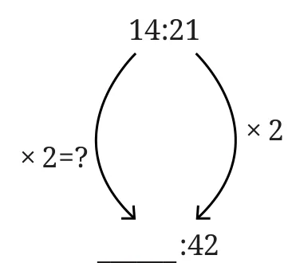
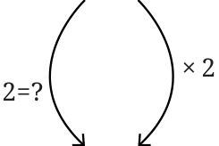
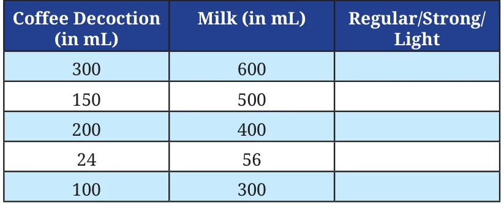

Example 1: Are the ratios 3 : 4 and 72 : 96 proportional? 3 : 4 is already in its simplest form. To find the simplest form of 72 : 96, we need to divide both terms by their HCF. What is the HCF of 72 and 96? The HCF of 72 and 96 is 24. Dividing both terms by 24, we get 3 : 4. Since both ratios in their simplest form are the same, they are proportional.
Example 2: Kesang wanted to make lemonade for a celebration. She made 6 glasses of lemonade in a vessel and added 10 spoons of sugar to the drink. Her father expected more people to join the celebration. So he asked her to make 18 more glasses of lemonade.
To make the lemonade with the same sweetness, how many spoons of sugar should she add?
To maintain the same sweetness, the ratio of the number of glasses of lemonade to the number of spoons of sugar should be proportional. For 6 glasses of lemonade, she added 10 spoons of sugar. The ratio of glasses of lemonade to spoons of sugar is 6 : 10. If she needs to make 18 more glasses of lemonade, how many spoons of sugar should she use? We can model this problem as —
\[6 : 10 :: 18 : ?\]
We know that each term in the ratio must change by the same factor, for the ratios to be proportional.
How can we find the factor of change in the ratio? The first term has increased from 6 to 18. To find the factor of change, we can divide 18 by 6 to get 3.

The second term should also change by the same factor. When 10 increases by a factor of 3, it becomes 30. Thus,
\[6 : 10 :: 18 : 30.\]
So, she should use 30 spoons of sugar to make 18 glasses of lemonade with the same sweetness as earlier.
Example 3: Nitin and Hari were constructing a compound wall around their house. Nitin was building the longer side, 60 ft in length, and Hari was building the shorter side, 40 ft in length. Nitin used 3 bags of cement but Hari used only 2 bags of cement. Nitin was worried that the wall Hari built would not be as strong as the wall he built because she used less cement.
Is Nitin correct in his thinking?
In Nitin and Hari’s case, we should compare the ratio of the length of the wall to the bags of cement used by each of them and see whether they are proportional. The ratio in Nitin’s case is 60 : 3, i.e., 20 : 1 (in its simplest form). The ratio in Hari’s case is 40 : 2, i.e., 20 : 1 (in its simplest form). Since both ratios are proportional, the walls are equally strong. Nitin should not worry!
Example 4: In my school, there are 5 teachers and 170 students. The ratio of teachers to students in my school is 5 : 170. Count the number of teachers and students in your school. What is the ratio of teachers to students in your school? Write it below.
______ : ______
Is the teacher-to-student ratio in your school proportional to the one in my school?
Example 5: Measure the width and height (to the nearest cm) of the blackboard in your classroom. What is the ratio of width to height of the blackboard?
______ : ______
Can you draw a rectangle in your notebook whose width and height are proportional to the ratio of the blackboard?
Compare the rectangle you have drawn to those drawn by your classmates. Do they all look the same?
Note to the Teacher: Give more such examples that students can relate to and ask them to give reasons why they think they are correct. Engaging with these problems and finding solutions through a process of proportional reasoning should go along with learning procedures and methods to solve the problems.

Example 6: When Neelima was 3 years old, her mother’s age was 10 times her age. What is the ratio of Neelima’s age to her mother’s age? What would be the ratio of their ages when Neelima is 12 years old? Would it remain the same?
The ratio of Neelima’s age to her mother’s age when Neelima is 3 years old is 3 : 30 (her mother’s age is 10 times Neelima’s age). In the simplest form, it is 1 : 10.
When Neelima is 12 years old (i.e., 9 years later), the ratio of their ages will be 12 : 39 (9 years later, her mother would be 39 years old). In the simplest form, it is 4 : 13.
When we add (or subtract) the same number from the terms of a ratio, the ratio changes and is not necessarily proportional to the original ratio.
Example 7: Fill in the missing numbers for the following ratios that are proportional to 14 : 21.
\[\underline{\qquad} : 42 \qquad 6 : \underline{\qquad} \qquad 2 : \underline{\qquad}\]

In the first ratio, we don’t know the first term. But the second term is 42. It is 2 times the second term of the ratio 14 : 21. So, the first term should also be 2 times 14 (the first term). Hence the proportional ratio is 28 : 42.
For the second ratio, the first term is 6.
What factor should we multiply 14 by to get 6? Can it be an integer? Or should it be a fraction?
We can model this as \(14y = 6\). So, \(y = \frac{6}{14} = \frac{3}{7}\).
So, we need to multiply 21 (the second term of 14 : 21) also by the same factor \(\frac{3}{7}\).
\(21 \times \frac{3}{7}\) is 9. So, the ratio is 6 : 9.
In the third ratio, the first term is 2.
We can see that when we divide 14 (the first term of 14 : 21) by 7 (HCF of 14 and 21) we get 2. If we divide 21 also by 7, we get 3. So, the ratio is 2 : 3.

Filter Coffee!
Filter coffee is a beverage made by mixing coffee decoction with milk. Manjunath usually mixes 15 mL of coffee decoction with 35 mL of milk to make one cup of filter coffee in his coffee shop. In this case, we can say that the ratio of coffee decoction to milk is 15 : 35. If customers want ‘stronger’ filter coffee, Manjunath mixes 20 mL of decoction with 30 mL of milk. The ratio here is 20 : 30.

Why is this coffee stronger? And when they want ‘lighter’ filter coffee, he mixes 10 mL of coffee and 40 mL of milk, making the ratio 10 : 40. Why is this coffee lighter?
The following table shows the different ratios in which Manjunath mixes coffee decoction with milk. Write in the last column if the coffee is stronger or lighter than the regular coffee.
